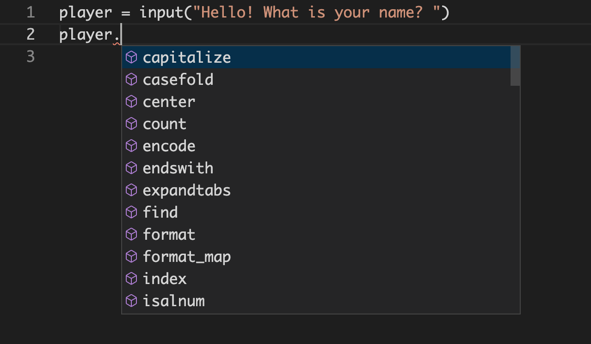

Data Types¶
Just like any other tool, understanding what kind of data you are dealing with at any given time means understanding what it can do and where it can go.
Think about vehicles. A pickup truck has a flatbed that is good for moving things, whereas a minivan is better for ferrying a group of people around. A bicycle might be a good way to get to places close to home, but you be in trouble if you tried to take a bicycle out sailing when what you need is a boat.
So it is with data. Every piece of data has a type and that type dictates things like what methods and attributes it has, what functions it can be passed to, and what other types of data it can play nicely with.
Table of Contents¶
Classes¶
In modern Python the terms type and class are more or less synonymous.
A class is like a blueprint for that type. You can call a class the same way you call a function. When you do an empty object of that type will be returned.
Lets look at what happens when we call some of the built in type classes that we are already familiar with.
>>> float()
0.0
>>> int()
0
>>> str()
''
>>> list()
[]
Classes may also take arguments. For example, most of the built in type classes can be used to convert a value to its type. This is called typecasting.
>>> str(5.0)
'5.0'
>>> float(5)
5.0
>>> int(5.25)
5
>>> list("hello")
['h', 'e', 'l', 'l', 'o']
Not all types can be converted to all other types though.
>>> dict(5)
---------------------------------------------------------------------------
TypeError Traceback (most recent call last)
<ipython-input-29-2e3c53b6b812> in <module>
----> 1 dict(5)
TypeError: 'int' object is not iterable
Sometimes you may need to convert to another type first to get the desired
results. For example, lets say we want a list with all of the digits in
32562. An int cannot be converted to a list. Instead, convert it to a
str first, then convert each of the digits back to an int.
>>> list(32562)
---------------------------------------------------------------------------
TypeError Traceback (most recent call last)
<ipython-input-46-947a2aee1ed3> in <module>
----> 1 list(32562)
TypeError: 'int' object is not iterable
>>> str(32562)
'32562'
>>> list(str(32562))
['3', '2', '5', '6', '2']
>>> digits = list(str(32562))
>>> for i, num in enumerate(digits):
digits[i] = int(digits[i])
>>> digits
[3, 2, 5, 6, 2]
Exercise¶
Exercise 16 (classes)
Do each of the following in a Python shell.
Use the type classes to create new empty objects for each of the following:
boolintfloatstrdictlisttuple
Convert data types of one type to another. Here are some to start with, but feel free to come up with your own combinations.
"5"toint5tostr5tobool5tofloat5.0toint5.25toint"5.25"toint5tolist[1, 2, 3]totuple(1, 2, 3)todict{'a': '1', 'b': '2', 'c': '3'}tolist
Solution to Exercise 16
>>> bool()
False
>>> int()
0
>>> float()
0.0
>>> str()
''
>>> dict()
{}
>>> list()
[]
>>> tuple()
()
>>> int("5")
5
>>> str(5)
'5'
>>> bool(5)
True
>>> float(5)
5.0
>>> int(5.0)
5
>>> int(5.25)
5
>>> int("5.25")
---------------------------------------------------------------------------
ValueError Traceback (most recent call last)
<ipython-input-63-12a4bd2b0343> in <module>
----> 1 int("5.25")
ValueError: invalid literal for int() with base 10: '5.25'
>>> int(float("5.25"))
5
>>> list(5)
---------------------------------------------------------------------------
TypeError Traceback (most recent call last)
<ipython-input-64-0c7f5cd48ec1> in <module>
----> 1 list(5)
TypeError: 'int' object is not iterable
>>> tuple([1, 2, 3])
(1, 2, 3)
>>> dict((1, 2, 3))
---------------------------------------------------------------------------
TypeError Traceback (most recent call last)
<ipython-input-66-237d7a195025> in <module>
----> 1 dict((1, 2, 3))
TypeError: cannot convert dictionary update sequence element #0 to a sequence
>>> list({'a': '1', 'b': '2', 'c': '3'})
['a', 'b', 'c']
Finding out the type¶
We can find out the type of any value by using the type() function.
>>> type(5)
<class 'int'>
>>> type(2.5)
<class 'float'>
>>> type("hello")
<class 'str'>
You can also check if a value is a particular type by using the isinstance()
function. The first argument is the value you want to check, and the second
argument is a type, or tuple of types, that you want to check it against.
>>> isinstance("5", int)
False
>>> isinstance(5.0, float)
True
>>> isinstance(5, (int, float))
True
Exercise¶
Exercise 17 (classes)
Do each of the following in a Python shell.
Use the
type()function on the following values, then come up with some of your own.FalseNone"1"5.0[1, 2, 3]
Use the
isinstance()function to check the following, then come up with some of your own.is
"5"astris
5anintis
[1, 2, 3]alistor atupleis
0abool
Solution to Exercise 17
What a difference a type makes¶
Knowing the data type of a value will tell what it can do and where it can be used.
To demonstrate this, lets compare an int, a float and a str.
>>> a_int = 1
>>> a_float = 1.0
>>> a_string = "1"
Members¶
An object can have members, which is something that belongs
to the object and is accessed with a . after a value followed by the member
name. There are two kinds of members: methods and attributes.
Methods¶
A method is a just like a function, but one that is attached to an object.
Calling a method is just like calling a function, except that it goes after the
value that it belongs to with a . between the object and the method.
For example:
strobjects have a method.isnumeric()which returnsTrueif all its characters numbers andFalseotherwise.floatobjects have a method.is_integer()which returns True if it is a whole number andFalseotherwise.intobjects have a method.bit_length()which returns the number of bits needed to store the number.
>>> a_string.isnumeric()
True
>>> a_float.is_integer()
True
>>> a_int.bit_length()
1
If we try to call a method on the wrong type, we’ll get an error.
>>> a_int.isnumeric()
---------------------------------------------------------------------------
AttributeError Traceback (most recent call last)
<ipython-input-117-789c44c0b36c> in <module>
----> 1 a_int.isnumeric()
AttributeError: 'int' object has no attribute 'isnumeric'
Attributes¶
Attributes, sometimes called properties, are just like variables, but they are attached to an object.
For example, both int and float objects have a .real property.
>>> a_float.real
1.0
>>> a_int.real
1
Available members¶
You can use the dir() function to see a list of all of a values members. (The
ones that start and end with __ are special internal methods that are used by
Python under the hood, so you can disregard those for now.)
>>> dir(a_int)
['__abs__',
'__add__',
'__and__',
...
'as_integer_ratio',
'bit_length',
'conjugate',
'denominator',
'from_bytes',
'imag',
'numerator',
'real',
'to_bytes']
You can then use the callable() function to find out if a member is method
(if returns True) or a attribute (if it returns False).
>>> callable(a_int.to_bytes)
True
>>> callable(a_int.imag)
False
In a Python shell you can also use the help() function on a type to get
detailed help on that type. You can also usually pass a value to help() to
get the help page for that type.
>>> help(int)
Help on int object:
class int(object)
| int([x]) -> integer
| int(x, base=10) -> integer
...
>>> help(1)
Help on int object:
class int(object)
| int([x]) -> integer
| int(x, base=10) -> integer
...
In VS Code, you can hit ⌘I or ⌃Space after a variable followed by
a . to get a list of available members. Then you can use the UP and
DOWN arrows to navigate between the options and hit ENTER to fill
in the selected name.

And in ipython you can hit TAB after a variable followed by a . to
get a list of available members. Then you can use the UP and
DOWN arrows or SHIFT+TAB and TAB to navigate between the
options and hit ENTER to fill in the selected name.

You can use the function hasattr() to check if a value has a member. The
first argument is the value you want to check, the second argument is the name
of the member, a str.
>>> hasattr(a_float, "is_integer")
True
>>> hasattr(a_float, "real")
True
>>> hasattr(a_str, "real")
False
Exercise¶
Exercise 18 (methods and attributes)
In a VS Code editor, use the ⌘I or ⌃Space shortcut keys after an
intvariable to find the method that will return an integer ratio.If you use
ipython, use the TAB key after afloatvariable to find the method that will return a hexadecimal representation of the number.In a Python shell use the
dir()function on astrvalue to find the method to right justify the string.In a Python shell use the
help()function on adicttype or value to find the method to remove specified key and return the corresponding value.In a Python shell use the
hasattr()function on alistvalue to find out if it has a method or attribute namedclear.In a Python shell use the
callable()function on adictvalue to find out ifvaluesis a method or a property.
Operators¶
Depending on the type of an object it may have different operators available to it, those operators may behave in different ways, and there may or may not be other types that it can play nicely with given a particular operator.
Lets take a look at how the + operator works for different types.
In the case of both int and float objects, the + operator adds the two
numbers together. However, in the case of a str object, strings are
concatenated.
>>> 1 + 1
2
>>> 1.0 + 1
2.0
>>> "1" + "1"
'11'
int and float objects can be used together with the + operator. However,
if we try to use the + with a str object and either an int or a float,
we’ll get an error.
>>> a_int + a_float
2.0
>>> a_int + a_string
---------------------------------------------------------------------------
TypeError Traceback (most recent call last)
<ipython-input-133-4eab260b045c> in <module>
----> 1 a_int + a_string
TypeError: unsupported operand type(s) for +: 'int' and 'str'
The / operator isn’t available for str object, so you’ll get an error if you try.
>>> "a, b, c" / 3
---------------------------------------------------------------------------
TypeError Traceback (most recent call last)
<ipython-input-108-e172469f33c1> in <module>
----> 1 "a, b, c" / 3
TypeError: unsupported operand type(s) for /: 'str' and 'int'
Available operators¶
Remember those pesky __ members we saw when using the dir() function? Those
are called magic or
dunder methods and we can look at them to find out what
operators a value has.
Each operator has a cooresponding magic method. For example the + operator
uses the .__add__() method. So if __add__ is in the list of available
members, we know that the + operator can be used with that value.
>>> dir(1)
['__abs__',
'__add__',
...
]
You can look in the Reference section below to for a list of Operator dunder methods and the operators they coorespond to.
Functions¶
Functions and methods often expect certian types of arguments. If you pass an argument of the wrong type you’ll get an arror.
For example, the len() function will accept list and str arguments, but
not int or float.
>>> len("abc")
3
>>> len([1, 2, 3])
3
>>> len(55)
---------------------------------------------------------------------------
TypeError Traceback (most recent call last)
<ipython-input-38-51e029ded84c> in <module>
----> 1 len(55)
>>> len(3.5)
---------------------------------------------------------------------------
TypeError Traceback (most recent call last)
<ipython-input-35-5c30567bf151> in <module>
----> 1 len(3.5)
TypeError: object of type 'float' has no len()
Built-in Types¶
object
None
numeric
float
int
bool
complex
containers, iterables
set
frozenset
dict
sequences
list
tuple
range
str
bytes
bytearray
memoryview
file (IO)
Summary¶
A type or class is the classification of a value.
When you call a class or type it returns an empty object of that type.
You can often call a class with an argument to convert it to that type.
You can use the
type()andisinstance()functions to find out the type of a value.Objects can have members which are accessed by adding a
.after the value followed by the member name. Members can either be attributes, which are just like variables, or methods which are just like functions.The
callable()function will returnTruefor things that can be called like methods, functions and classes,Falseotherwise.You can find out what members a value has:
in IPython after a variable followed by a
.by hitting TABin VS Code after a variable followed by a
.by using the ⌘I or ⌃Space keyboard shortcutsby using the
dir()orhasattr()functions
The type of a value dictates:
what methods and attributes are available
what operators it has access to and how they behave
which functions it can be used with
Reference¶
Glossary¶
Data Types¶
- attribute¶
- property¶
A variable that is attached to an object and is accessed with a
.after a value followed by the member name. For example, file handler objects have an attribute.closedwhich is set True if the handler is closed and False if it is open.- dunder method¶
- magic method¶
- special method¶
An method, beginning and ending with two underscores (
__) intended to be used internally by Python.- member¶
An attribute or method attached to an object accessed with a
.after a value followed by the member name- method¶
A function that is attached to an object and is accessed with a
.after a value followed by the member name. For example, string objects have a.lower()method which returns a copy of the string converted to lowercase.- object¶
The ancestor of all types in Python.
- type¶
- data type¶
- class¶
The classification of a value which tells Python what operations can be performed on it. Some examples include str, int, list, and dict.
When called the type or class will return a new empty object of that type. For examplestr()returns"".- typecasting¶
Converting from one type to another.
Operator dunder methods¶
Below are tables matching operators to their cooresponding dunder methods.
Arithmetic Operators¶
Operator |
Meaning |
Method |
Operator |
Method |
|---|---|---|---|---|
|
sum |
|
|
|
|
difference |
|
|
|
|
product |
|
|
|
|
quotient |
|
|
|
|
floored quotient |
|
|
|
|
remainder |
|
|
|
|
power of |
|
|
|
Comparison operators¶
Operator |
Meaning |
Method |
|---|---|---|
|
less than |
|
|
greater than |
|
|
less than or equal to |
|
|
greater than or equal to |
|
|
equals |
|
|
not equals |
|
|
contains |
|